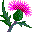

Seen at 2:14 AM
Project 1 for Core Studio: Systems
, __ \/ __
/\^/`\ /o \{}/ o\ If I had a flower for each time
| \/ | \ () / I thought of you, my garden
| | | `> /\ <` ,,, would be full...
\ \ / @@@@ (o/\/\o) {{{}} _ _
'\\//' @@()@@ _ ) ( ~Y~ @@@@ _{ ' }_
|| @@@@ _(_)_ wWWWw .oOOo. @@()@@ { `.!.` }
|| ,/ (_)@(_) (___) OO()OO @@@@ _ ',_/Y\_,'
|| ,\ | /) (_)\ Y 'OOOO',,,(\|/ _(_)_ {_,_}
|\ || |\\|// vVVVv`|/@@@@ _ \/{{}}}\| (_)@(_) | ,,,
| | || | |;,,,(___) |@@()@@ _(_)_| ~Y~ wWWWw(_)\ (\| {{{}}
| | || / / {{}}} Y \| @@@@ (_)#(_) \| (___) | \| /~Y~
\ \||/ /\\|~Y~ \|/ | \ \/ /(_) |/ |/ Y \|/ |//\|/
jgs\ `\\//`,.\|/|//.|/\\|/\\|,\|/ //\|/\|.\\\| // \|\\ |/,\|/
^^^^^^^^^^^^^^^^^^^^^^^^^^^^^^^^^^^^^^^^^^^^^^^^^^^^^^^^^^^^^^
| conversations from 659 chats |  |
At the bottom of the page is a dropdown menu for the different poems :)
A series of poems, made from downloading the all the data from my Instagram account (absolutely everything) from the past 3 years. This was a very reflective moment for me, as I realized just how many people I have crossed paths with… how many timelines I entered…
~from 2022 to September 7, 2025~
There is something so beautiful in knowing just how many connections, how many conversations one had through the past 3 years… I hope the people know how much I think about them and value their conversations…